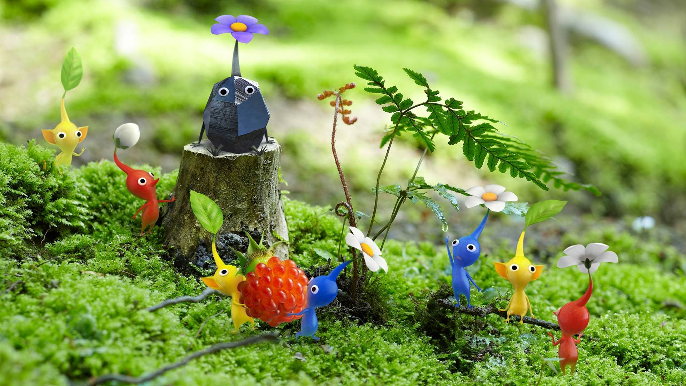

This real-time strategy and puzzle game lets the player control Captain Olimar and other explorers to lead and gather small plant-like creatures called Pikmin each type having its own unique abilities.
Questions or suggestions for this site? Email me: Krod@example.com